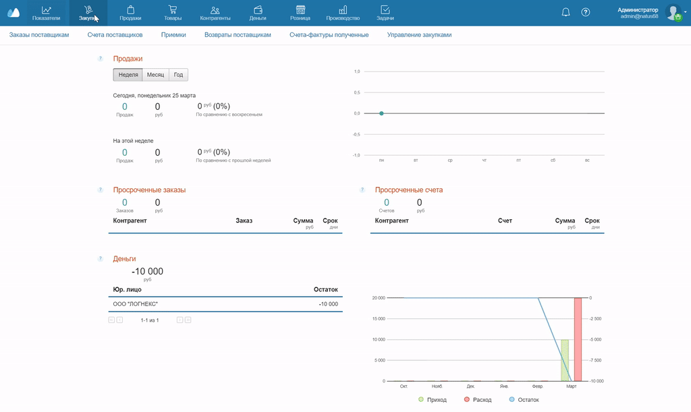
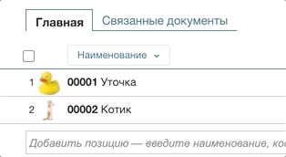
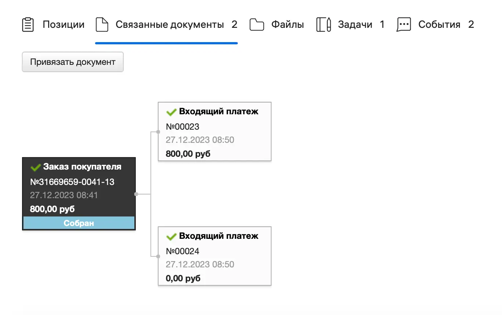
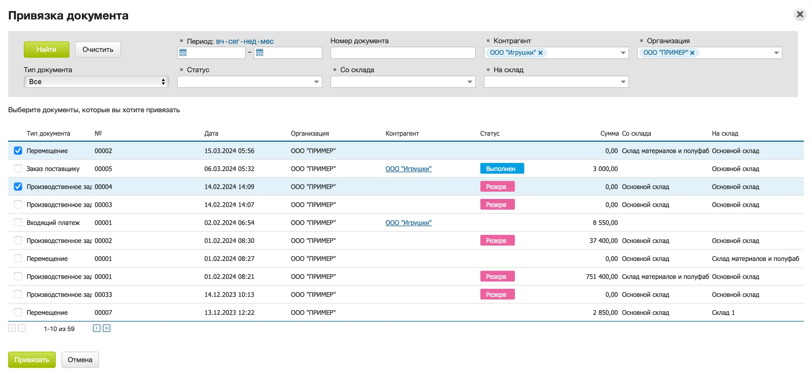
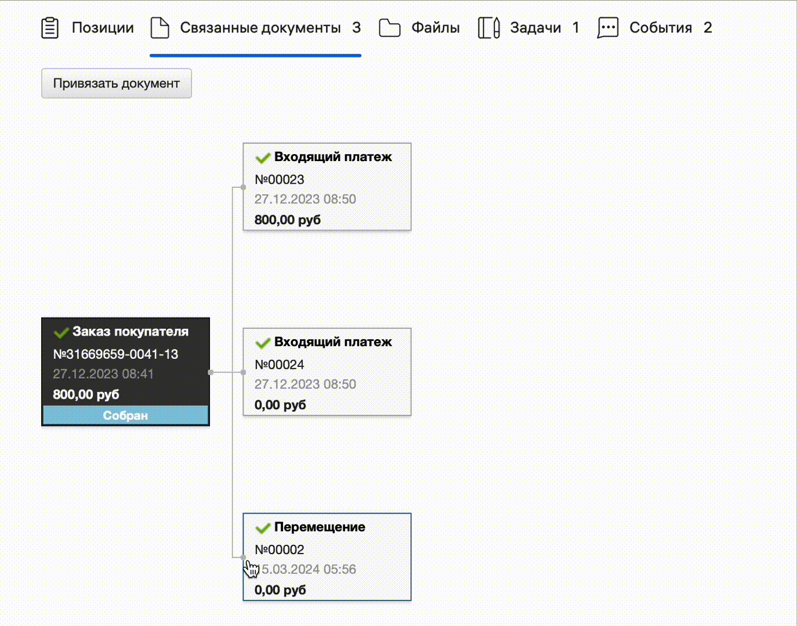

Создание документов — это основная операция, на которой строится работа в МоемСкладе. Документы можно создавать почти во всех разделах: Заказы покупателей, Счета поставщиков, Платежи, Оприходования, Списания и так далее. Отчет по документам, созданным за все время, представлен в разделе Показатели → Документы.
Работа с документами в разных разделах ведется по схожим принципам. Рассмотрим процесс на примере раздела Закупки → Заказы поставщикам.
- Перейдите в раздел и нажмите + Заказ. Откроется новое окно.
- Укажите организацию и контрагента — это обязательные поля. Поле с номером документа оставьте пустым — сервис подставит номер автоматически.
- Сохраните документ.

Если документ просматривают одновременно несколько сотрудников, вверху отображаются их имена. Это помогает совместно редактировать и обрабатывать документы.
Рассмотрим основные возможности документов.
Печать
Эта кнопка помогает распечатывать документы или комплекты документов. Нажмите Печать → нужный документ и выберите, в каком формате хотите создать файл.
Инструкция по печати.
Отправка
Вы можете высылать контрагентам счета, договоры и другие документы прямо из МоегоСклада.
Инструкция по отправке документов.
Статус
Статусы позволяют отслеживать жизненный цикл документов. Например, используются статусы Новый, Возврат или Отменен.
Инструкция по использованию статусов.
Проведено
В рабочем документе рядом с надписью Проведено всегда стоит флажок. Если флажка нет, документ создан как черновик и не отображается в отчетах.
Позиции
Добавление позиций
Позиции в документ можно добавлять несколькими способами:
- Через поиск по наименованию, коду, артикулу.
- С помощью ручного ввода или сканирования штрихкода:
- товара, модификации, услуги или комплекта;
- упаковки товара;
- весового товара.
- Импортировать список позиций из Excel или CSV.
- Из справочника товаров.
Сортировка позиций
Позиции добавляются в документ поочередно — последний добавленный товар располагается в конце списка. Для удобства работы можно отсортировать позиции по коду или наименованию товара: нажмите на заголовок Наименование и выберите вариант сортировки. Также можно сортировать позиции, просто перетаскивая их по списку.
Редактирование позиций
Позиции можно заменять и дублировать — нажмите на кнопку в конце строки и выберите Заменить или Дублировать.
Можно также менять количество товара, цену, устанавливать скидку, включать и отключать НДС. Поставьте курсор в ячейку и откорректируйте значение.
Чтобы поменять тип цен сразу для нескольких позиций, поставьте флажки в нужных позициях, нажмите на кнопку Цена и выберите Расценить. В новом окне выберите, как хотите изменить цены.
Чтобы обновить цены во всей системе, нажмите на заголовок колонки Цена, выберите в выпадающем списке Сохранить цены и укажите новые цены в Редакторе цен.
Удаление позиций
Чтобы удалить одну позицию, нажмите кнопку в конце строки и выберите Удалить.
Чтобы удалить несколько позиций, выделите их флажками и нажмите на кнопку Удалить в заголовке колонки.

Изображения для позиций
Если навести курсор на изображение в строке позиции, оно увеличится. Если нажать на изображение, оно раскроется во всплывающем окне.
Файлы
Вы можете загружать в систему файлы: например, изображения товаров, сканы документов, шаблоны этикеток и ценников. Список всех файлов, добавленных за всё время, представлен в разделе Показатели → Файлы.
Инструкция по работе с файлами.
Связанные документы
В любом документе можно посмотреть, какие документы с ним связаны: например, Заказ покупателя может быть связан со Счетом покупателя и Входящим платежом.
Чтобы посмотреть связи, перейдите во вкладку Связанные документы рядом со вкладкой Главная. Откроется схема документов. Нажмите на документ, чтобы открыть и просмотреть его.

Чтобы создать связь, нажмите на кнопку Привязать документ. Откроется окно выбора. Отметьте флажком нужный документ и нажмите Привязать.

Чтобы удалить связь, наведите на нее курсор и нажмите на крестик. Откроется окно подтверждения — нажмите Удалить связь.

Нельзя удалять связи с Предоплатами и Счетами-фактурами.
Проверка
Из документа можно проверить комплектацию товаров, коды маркировки и серийные номера.
Инструкция по проверке комплектации товаров.